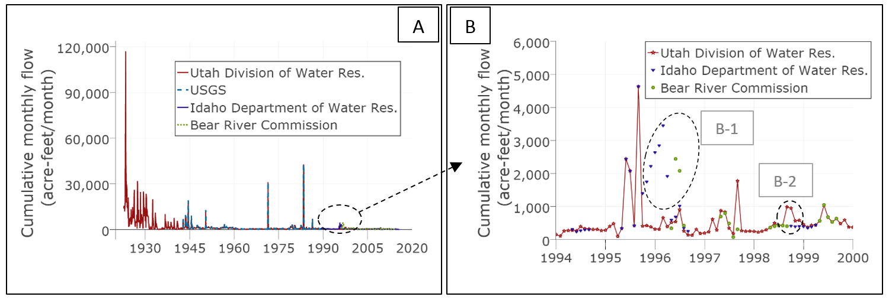
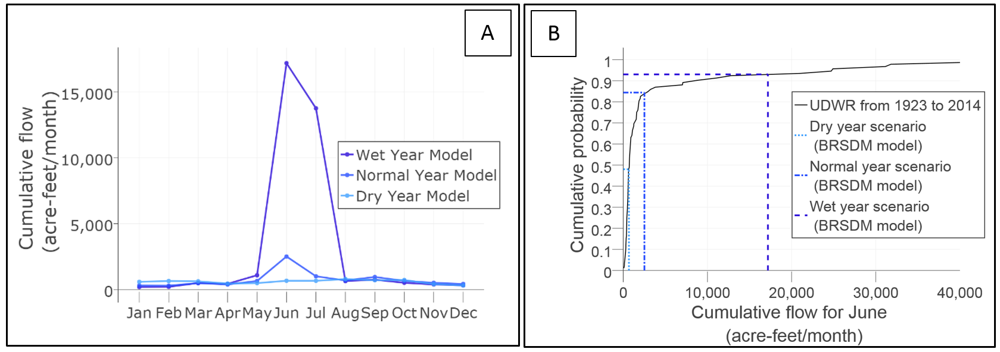
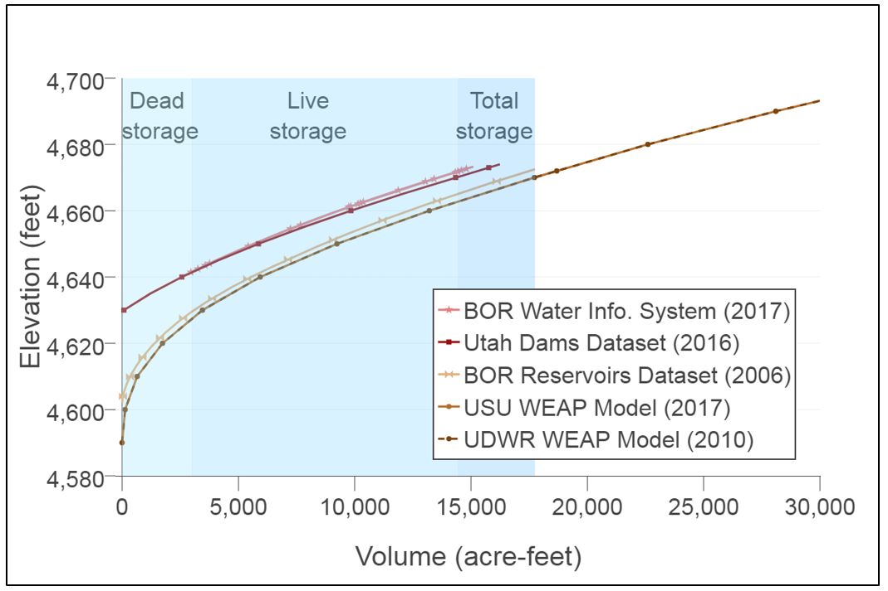
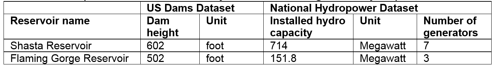

Use case 2¶
What differences are there across datasets in the data values of properties of a water system component?
Problem¶
Once modelers have identified the data available for a modeling study, next they need to determine which datasets and values to use in their model. Modelers often use many data management methods to query, manipulate, and join different water management data types (e.g., time series, multi-column arrays) to analyze and prepare them for systems models. Modelers also manually search for descriptive metadata stored separately in many files like PDF documents or HTML pages.
Solution¶
This use case shows how a modeler can use WaMDaM’s multiple data types, controlled vocabularies, conditional queries, and metadata design features to both query and compare values across datasets. We query and compare results for 1) time series and seasonal streamflow below Stewart Dam, Idaho, 2) water use in Cache Valley, Utah, 3) storage elevation curves for Hyrum Reservoir in Utah, and 4) dam height, hydropower purpose, and number of generators for Flaming Gorge and Shasta Reservoirs.
Use Case 2.1¶
What differences are there across datasets in flow data values below Stewart Dam in Idaho?
Use Case 1 identified four flow datasets available for the site below Stewart Dam in Idaho. These datasets were identified using the controlled node instance name “USGS 10046500 BEAR RIVER BL STEWART DAM NR MONTPELIER, ID” and the controlled attribute name “Flow”. The datasets are maintained by USGS, Utah Division of Water Resources (UDWR), Idaho Department of Water Resources (IDWR), and the Bear River Commission (Figure 5-A). We use the time series metadata: attribute unit, year type, aggregation statistic, and aggregation interval unit to aggregate and convert all the time series datasets into a comparable cumulative monthly flow in acre-feet in calendar years. The field Year Type (Section 4.2) allowed us to correctly shift years to the same calendar year that started January 1.
SQL scripts and results
| Use Case | Query | Result (csv) |
|---|---|---|
| Identify TimeSeries Seasonal Dual data | Query | Result |
| Identify aggregate TimeSeries Values | Query | Result |
| Identify Seasonal Values | Query | Result |
Python 2.7 script to plot figures of use case
To run the Python script, you need to be connected to the Internet. The script reads its data from the csv files hosted on GitHub.
| Use Case figure | Python Script | Interactive figure |
|---|---|---|
| Figure a | script | Figure |
| Figure b | script | Figure |
The resulting traces span 92 years from 1923-2015 and show most datasets are identical except for a few discrepancies in 1996 and 1999 Figure 1-B. Metadata shows that the PacifiCorp power company collected streamgage data before and after USGS record. PacifiCorp shares raw data (not available to us) with each state that states then interpolates values if data is missing. The IDWR flagged deviated data values for potential errors while the UDWR interpolated missing values. This data discrepancy underscores the importance of comparisons and using source, method, and organizations, and time series contextual metadata to convert and interpret data values for each flow data and help users choose a time series for this site like the UDWR dataset with the longest record.
Figure 1¶
 Figure 1: Compiled time series data of flow below Stewart Dam, Idaho reported by different agencies over time. [A] 1923 to 2015 and [B] a six-year window that highlights similarities and discrepancies among sources.
Flow data in water management datasets also exist in derived seasonal form and modelers may use them as input to models. The same query also returned seasonal data from a fifth source, the BRSDM model, which has three scenarios for monthly flow (dry, normal, and wet) for the same Stewart Dam site Figure 2-A. The BRSDM model respectively reported average flows for June as 666, 2,506, and 17,181 acre-ft/month for dry, normal, and wet years. The model materials did not document how seasonal monthly values were derived. But by comparing results to June flow values in the longest UDWR time series record (1923 to 2015) we estimated the dry and wetter flow scenarios have 48% and 3% probabilities of exceedance Figure 2-B. These results can help define more representative flow values for models with seasonal-based analysis.
Python 2.7 script to plot figures of use case
To run the Python script, you need to be connected to the internet. The script reads its data from the csv files hosted on GitHub.
| Use Case figure | Python Script | Interactive figure |
|---|---|---|
| Figure A | script | Figure A |
| Figure B | script | Figure B |
Figure 2¶
 Figure 2: [A] Average monthly flow data at Below Stewart Dam site (same site in Figures 1). Color coded from light to dark blue for dry, normal, and wet year scenarios. [B] A cumulative distribution of the all June flow data in the Utah UDWR dataset to evaluate how well the dry and wet years represent the historic record peak flows.
Use Case 2.2¶
What differences are there across datasets in water use in Cache County Utah?
Modelers often require data for agriculture and other water uses, which might be derived or estimated, not measured like discharge in rivers. We use controlled vocabulary, metadata, and multiple data types features to enable querying, aggregating, and comparing all the datasets for agriculture water use in Cache County in the Lower Bear River, Utah. The query used “diverted flow” controlled term and returns four time series and seasonal water use values with different estimate methods from three datasets: the WEAP and WASH model instances and the WaDE data source Figure 3. Using “depleted flow” controlled term returns a fifth time series form the WaDE source (dashed line in Figure 3). We used the source and method descriptions for attributes, node instances, and scenarios to identify how the datasets represent water use in spatial or time extents. Data either represent i) the entire county area annually in one node as diverted or depleted water like the WaDE dataset (two curves), ii) the entire county seasonally across 11 demand sites (WEAP Model 2017), iii) part of the county monthly in one or five sites as in the WEAP 2010 and WASH 2017 models, respectively. Users can query many agriculture water use estimates in multiple datasets and use values that match their models required data for the entire county or part of it, monthly or annually, and for diverted or depleted flow.
In addition to demand data, the query also can return water rights data from the WaDE data source under the controlled Object Type “Demand Site” and attribute name of “Flow”. For example, the “WATER RESEARCH LAB. UTAH STATE UNIVERSITY” has two water rights. One of them is 84 AF/Year and 146 cfs for the beneficiary use descriptor value of “Power”. So WaMDaM organizes descriptive and numeric data for water rights.
| Use Case | Query | Result (csv) |
|---|---|---|
| IdentifyDemandSites | Query | Result |
| Identify Demand Sites Seasonal Values | Query | Result |
| Identify DemandSites Time Series Values | Query | Result |
| Water Rights | Query | Result |
| Use Case figure | Python Script | Interactive figure |
|---|---|---|
| Figure a | script | Figure |
Figure 3¶
 Figure 3: Aggregated water demand for Cache County Utah across WEAP and WASH models and the WaDE dataset. Color-coded from light to dark blue for low to high water use. Native attribute terms are in quotes
Figure 3: Aggregated water demand for Cache County Utah across WEAP and WASH models and the WaDE dataset. Color-coded from light to dark blue for low to high water use. Native attribute terms are in quotes
Use Case 2.3¶
What differences are there across datasets in volume and elevation curves of a reservoir?
Molders also search for data describing multi-attribute series such as reservoir bathymetry (elevation versus storage) to represent the physical capacity of reservoirs in their models. Here, we use the controlled instance name of Hyrum Reservoir and controlled attribute names Volume and Elevation to identify five volume-elevation curves for Hyrum Reservoir from three datasets: USBOR, Utah Dams, and WEAP model datasets. The USBOR Water Info dataset has two time series of storage and elevation, which have the same daily time step from January 2010 to May 2017. We plotted both series to empirically derive a storage and elevation curve for this dataset (Figure 8).
| Use Case | Query (SQL) | Result (csv) |
|---|---|---|
| NumericValues_otherTypes | Query | Result |
| MultiAttributeValues | Query | Result |
| MergeTimeSeriesValues | Query | Result |
| NumericValues_Metadata | Query | Result |
| MultipleTimeSeriesColumnsSameTimeStamp | Query | Result |
| Use Case figure | Python Script | Interactive figure |
|---|---|---|
| Figure | script | Figure |
Metadata indicate the five curves originate from two sources: the Utah Dams dataset and USBOR who owns the dam. The WEAP model instance used older curves from the UDWR while Utah Dams and USBOR datasets used USBOR source. Next, we discuss the following three comparison insights, which are related to semantics, range of data, and its date of measurement. Looking more closely at the Figure 4 results, first, there is a systematic displacement in volume and elevation between the upper red and lower brown sets of curves. The upper red curves indicate “live storage” which does not account for “dead storage”, while the lower brown curves reflect “total storage”. The USBOR reported dead storage as 3012 acre-feet at the elevation of 4629.6 feet. We verified this interpretation by subtracting or adding dead storage below the elevation of 4629.6 feet, which reproduced similar lower or upper curves. In the WEAP and WASH models, dead storage is termed “Top of Inactive” and MinCap.
Second, the Figure 8 curves cover different ranges of volume and elevation. The BOR Water Info Sys. (2017) derived curve represents operational ranges of elevation and storage. The Utah Dams (2016) curve and its equivalent BOR Reservoirs Dataset (2006) curve both represent the full bathymetry range. The identical WEAP model curves have a physical range that extend longer up to 70,000 acre-feet volume and 4,750 feet elevation (not shown). Metadata suggest that this extension could have represented a future scenario that raised the dam height.
Third, the methods metadata show there have been two different bathymetry surveys in 1935 and 2016, which are reflected in the BOR Reservoirs Dataset (2006) and USU WEAP Model 2017 curves (both for total storage). The BOR Reservoirs Dataset (2006) curve has less total storage than the other identical curves in the WEAP model instances that use the 1935 survey. Total storage decreased by 1,179 acre-feet which is 6% of the original storage due to decrease in both the dead and live storage potential. The percentage of dead storage to total storage is relatively high, about 17% in this small reservoir and misrepresenting the total or live storage could affect modeling results.
WaMDaM used the features of CVs, metadata, and multiple data types to readily identify and compare multi-attribute bathymetry curves across datasets that had different semantics, measurement periods, and extrapolated versus measured methods. The comparison helps identify differences in the datasets, improve our contextual understanding of reported data values, and help to select the appropriate curve for modeling. Modelers can follow this data analysis exercise to correctly represent the bathymetry curve for other reservoirs in their models and account for dead and live storage.
Figure 4¶
 Figure 4: Five volume-elevation curves for Hyrum Reservoir, Utah. Red and brown color-coded curves lighter to darker indicate larger volume at the same elevation. Blue shadings indicate Dead, Live, and Total storage zones for the 2006 BOR survey.
Use Case 2.4¶
What differences are there across datasets in dam heights, installed hydropower capacity, and number of generators for two reservoirs?
Modelers may search for attributes with numeric and descriptive values to correctly understand and represent the functions of water systems like modeling hydropower in dams. In this case, we use the controlled Instances of Shasta Reservoir, California and Flaming Gorge Reservoir, Utah to identify, compare, and relate their dam heights, installed hydropower capacity, and number of generators across both the US Dams and the National Hydropower Datasets (Table 1). The dam for Shasta Reservoir is 100 feet higher, has four more installed generators, and five times the installed generation capacity as Flaming Gorge Reservoir.
| Use Case | Query | Result |
|---|---|---|
| HydroPower_UT_USDams | Query | |
| CompareShastaFlamingGorge | Query | |
| HydroPowerPlants_UT | Query | |
| HydroPower_CA_USDams | Query |
The Hydropower Dataset should be used to update the US Dams dataset to include Hydropower as a purpose for reservoirs like Hyrum and Jordanelle in Utah that have capacities of 0.5 and 13 Megawatts. The US Dams Dataset has only nine reservoirs in Utah and 127 in California with a Hydropower purpose while the Hydropower dataset has 73 in Utah and 413 plants in California. We used the WaMDaM features of controlled vocabularies of Instance name and multiple data types in descriptor values: “Hydropower”, “UT”, “CA” to enable comparisons across two datasets in both Utah and California.
Table 1: Companion between two major US dams’ height and hydropower from two datasets 